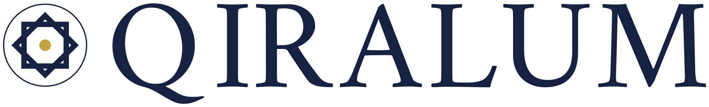
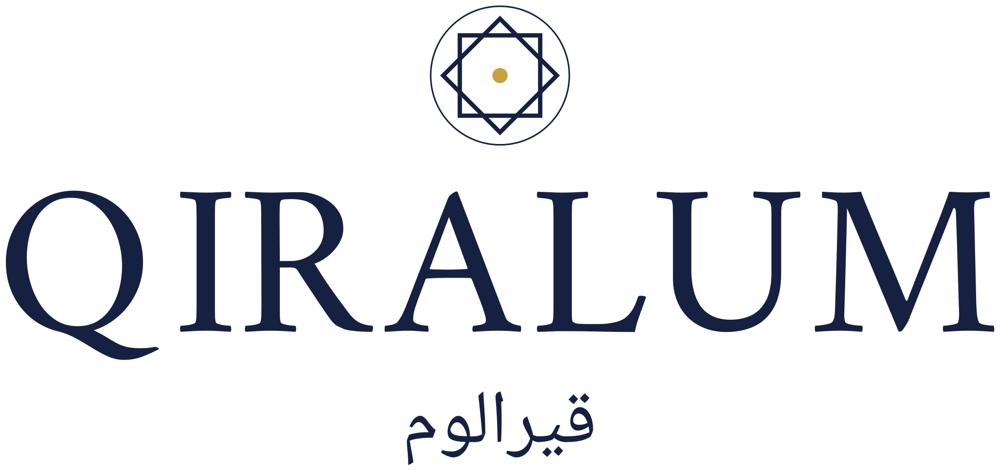
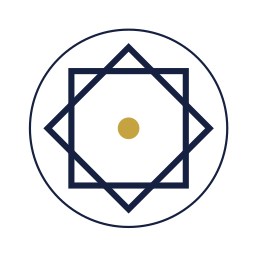
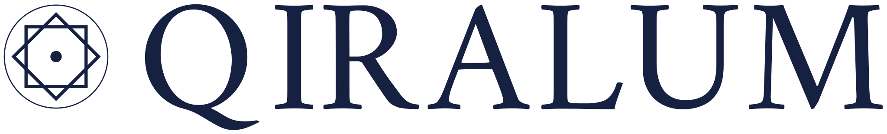

现行锁档
英伦巴斯科维尔，双环符号。金点在开口里，贴着外环。
Qiralum

这是一套中东与伊斯兰方案。符号是圆里的两枚方环，叠成八角星，线条与字重对齐，金点在星心。拉丁字用 Amiri。阿文用库法体，写作 قيرالوم，排成一行。外缘仍与字高对齐。




英伦巴斯科维尔，双环符号。金点在开口里，贴着外环。
金点在浅底和深底上都用古金。单色版本只在无法印第二色时使用。这套方案的金点在星心。现行双环的金点仍在开口里，开口在正上方。